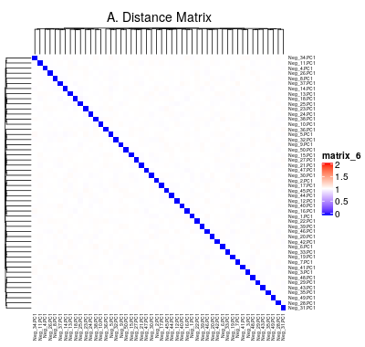

Find the optimum number of clusters for hierarchical clustering
Sehyun Oh
2021-06-23
Source:vignettes/select_numOfClusters/find_optimum_k.Rmd
find_optimum_k.RmdPreparae negative controls
Build negative controls
We used the negative-control dataset to explore the optimum number of clusters for hierarchical clustering. Negative-control dataset was built using the below script.
## Do not run this script without checking it first!!
source("neg_controls.R")This script runs the following processes:
Generate 50 synthetic datasets:
–> Each dataset contains 50 random samples from 44,890 samples (with replacement).
–> Scramble genes in each dataset by random selection without replacement and add random value between -0.1 and 0.1Row-normalize synthetic datasets
PCA on synthetic datasets
–> saved asbootstrap_PCs_rowNorm_Neg.rdsCombine top 20 PCs from traning datasets and PC1s from synthetic datasets
–> saved asall_{#neg}.rdsCalculate distance matrix and hcut for each combined dataset
–> saved asres_dist_{#neg}.rdsandres_hclust_{#neg}.rdsEvaluate how the negative controls were separated
–> saved asevals_{#neg}.rdsandeval_summary_{#neg}.rds
Validate negative controls
Below is the summary of the distance matrix of 10,720 PCs (top 20 PCs from 536 studies).
summary(res_dist)
## Min. 1st Qu. Median Mean 3rd Qu. Max.
## 0.01688 0.98783 1.00000 0.99999 1.01217 1.97482We create a synthetic dataset whose distance ranges median or higher of the actual 536 training dataset. Below is the distance matrix of the 50 negative controls generated from the neg_controls.R script. Distance ranges roughly between 1st and 3rd quarters of training dataset’s distance distribution.
summary(res.dist.neg)
## Min. 1st Qu. Median Mean 3rd Qu. Max.
## 0.9680 0.9937 1.0000 0.9999 1.0054 1.0317We plot the heatmap of distance matrix using the different number of negative controls (PC1s from synthetic datasets). They are different within the range we want to separate.

Optimum number of clusters
Next we combined top 20 PCs of training datasets and PC1s from the varying numbers of negative controls (10, 20, 30, 40, and 50) and performed hierarchical clustering with the different numbers of clusters. Number of clusters was the rounds of the number of PCs divided by 9 different numbers (d = 7, 6, 5, 4, 3, 2.75, 2.5, 2.25, and 2).